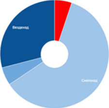
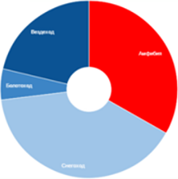
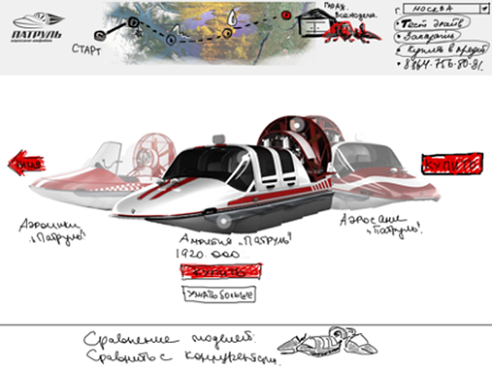
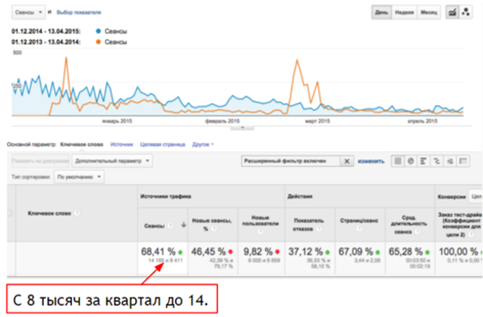
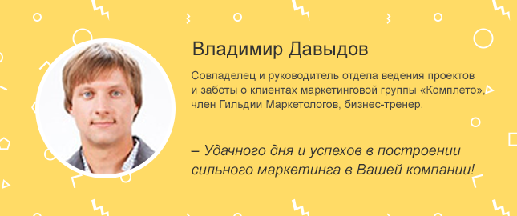

<html>
  <head>
    <title>Верстка e-mail письма</title>
    <link rel="stylesheet" href="css/bundle.css"/>
    <script src="js/jquery-3.1.1.js"></script>
  </head>
</html>
<body>
  <div class="container">
    <header>
      <div class="banner">
        <div class="web_version">
          <div class="pic"></div><a href="#">веб-версия</a>
        </div>
      </div>
    </header>
    <div class="diagramms">
      <h4>Здравствуйте, Veronika!</h4>
      <p>Что делать, если спрос на уникальный сложный продукт не сформирован, а потому черпает из интернета минимум трафика?</p>
      <p>Главная проблема продукта нашего клиента заключалась в его уникальности, ведь конкретно его почти никто в интернете не искал.</p>
      <p>По данным сервиса Wordstat, по брендовому запросу было всего 601 показ в месяц. Кроме того, продукт проигрывал в популярности конкурентам.</p>
      <p>Однако многие специалисты "Комплето" знали, как работать с несформированным спросом, и по нашим прогнозам мы выявили реальную возможность изменить структуру спроса.</p>
      <div class="prognoz">
        <h4>Сделан прогноз при работе с контент-маркетингом</h4>
        <p>Реальная возможность изменить структуру спроса</p>
        <div class="disks">
          <div class="current">
            <div class="desc">
              <h4>Текущий спрос</h4>
            </div>
          </div>
          <div class="future">
            <div class="desc">
              <h4>Возможный спрос</h4>
            </div>
          </div>
        </div>
      </div>
      <div class="legend">(Рис.1) Красный - спрос на продукт нашего клиента</div>
    </div>
    <div class="questions">
      <div class="banner"></div>
      <div class="vopr">
        <h3>1. Разработали полное семантическое ядро</h3>
        <p>При разработке семантического ядра будущего сайта мы подбирали запросы по следующим категориям:</p>
        <ul>
          <li>брендовые запросы</li>
          <li>синонимы бренда</li>
          <li>товары-заменители</li>
          <li>бренды и модели конкурентов</li>
          <li>выполняющие ту же функцию</li>
        </ul>
        <p>Число запросов было увеличино в 41 раз!</p>
        <h3>2. Нашли новые сегменты целевой аудитории.</h3>
        <p>
          Изначально клиент подал нам 4 группы целевой аудитории продукта,
          но мы поискали покупателей и в других сферах
        </p>
        <h3>3. Разработали Стратегию Электронного Маркетинга.</h3>
        <p>Собрав всю информацию о бизнесе клиента воедино, мы разработали комплексную стратегию электронного маркетинга и тактический план для реализации поставленных бизнес-задач</p>
        <h3>4. Разработали новый сайт под семантическое ядро аудитории.</h3>
        <p>Подробнее о ходе разработки дизайна мы описали в <span><a href="#">статье</a></span></p>
        <div class="banner2"></div>
        <div class="legend">(Рис.2) Прототип страницы сайта www.amfibia.ru</div>
        <h3>5. Нашли интересные SEO-решения.</h3>
        <p>Остро встал вопрос по части SEO – как привлечь дополнительный трафик, сохранив "промо-формат" сайта с небольшим количеством текста? Мы придумали решение - разместить информацию во всплывающих окнах, которые появляются при нажатии на каждую иконку сайта. Также нам удалось обойтись без покупок ссылок. Подробнее - в <a href="#">статье.</a></p>
      </div>
    </div>
    <div class="result">
      <div class="banner"></div>
      <div class="content">
        <div class="legend">(Рис. 3) График роста продаж</div>
        <ul>
          <li>Открыли новые целевые группы аудитории и нашли дополнительные и наш дополнительные источники прибыли для компании;</li>
          <li>Увеличили семантическое ядро в 41 раз;</li>
          <li>Увеличили трафик сайта на 68% при небольшом количестве текстов;</li>
          <li>Уменьшили на 22% показатель ухода с сайта</li>
          <li>Увеличили в 18 раз количество заявок</li>
        </ul>
        <h4>Поверьте, эти результаты достижимы</h4>
        <div class="btn">Читать статью</div>
      </div>
    </div>
    <div class="author">
      <div class="banner"></div>
      <div class="content">
        <p>Понравилась статья? Сохраните её к себе:</p>
        <div class="social"><a href="#"></a><a href="#"></a><a href="#"></a><a href="#"></a></div>
        <div class="spam">
          <p>
            К сожалению, иногда наши письма попадают в "спам".<br/>
            Особенно часто это происходит в том случае, если Вы оформили
            подписку на корпоративный ящик. Чтобы не пропустить ни одной
            депеши, пожалуйста, добавьте наш адрес <a href="mailto:press-room@completo.ru">press-room@completo.ru</a> в адресную книгу.
          </p>
        </div>
      </div>
    </div>
    <footer>
      <div class="logo"></div>
      <p>
        Мы открыты для общения.<br/>
        Присоединяйтесь к нам в социальных сетях:
      </p>
      <div class="social"><a href="#"></a><a href="#"></a><a href="#"></a><a href="#"></a><a href="#"></a><a href="#"></a><a href="#"></a></div>
      <h4>Приходите в гости</h4>
      <div class="address">
        107140, Москва ул. Курсовой переулок 17с1, мансарда<br/>
        +7 (495) 640-89-97<br/><a href="mailto:contact@completo.ru">contact@completo.ru</a>
      </div>
      <div class="unsubscribe">
        <p>Вы получили это письмо, поскольку интересуетесь интернет-маркетингом для В2В и сложных рынков и подписались на нашу рассылку "Депеша от Комплето". Если Вам больше не интересно получать от нас полезный и бесплатный контент, Вы можете отписаться.<br/><a href="#">Отписаться</a></p>
      </div>
    </footer>
  </div>
</body>